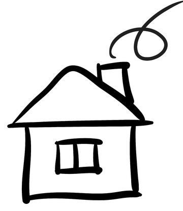

01 Séquence A · Activité 01
Croquis de votre habitation
Premier pas vers un langage graphique commun à tous les acteurs du bâtiment.
Premier pas vers un langage graphique commun à tous les acteurs du bâtiment.
O4 - Communiquer une idée, un principe ou une solution technique, un projet, y compris en langue étrangère.
CO4.1. Décrire une idée, un principe, une solution, un projet en utilisant des outils de représentation adaptés.
La présente activité doit commencer à vous sensibiliser à la nécessité de pouvoir dialoguer avec tout le monde, que ce soit votre voisin, votre enseignant ou même avec les acteurs professionnels du bâtiment.
Avant de vous donner des clés pour réussir à avoir le même langage que tout le monde, vous allez commencer par faire un croquis à la main de votre habitation, que ce soit une maison ou un appartement.

Sur feuille A4 (voir A3), chaque élève doit dessiner à main levée un croquis de son logement montrant les formes, dimensions, ouvertures et tout ce qui semblera important à dessiner.
À la fin de séance vous devrez fournir :
Ce site a été réalisé par Abdellah CHELOUAH.